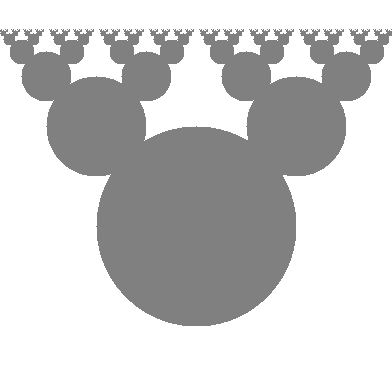

20 Graphics
The Java library includes the package java.awt for drawing 2D graphics. AWT stands for “Abstract Window Toolkit”. We are only going to scratch the surface of graphics programming. You can read more about it in the Java tutorials (see https://thinkjava.org/java2d).
20.1 Creating Graphics
There are several ways to create graphics in Java; the simplest way is to use java.awt.Canvas and java.awt.Graphics. A Canvas is a blank rectangular area of the screen onto which the application can draw. The Graphics class provides basic drawing methods such as drawLine, drawRect, and drawString.
Here is an example program that draws a circle by using the fillOval method:
import java.awt.Canvas;
import java.awt.Graphics;
import javax.swing.JFrame;
public class Drawing extends Canvas {public static void main(String[] args) {
JFrame frame = new JFrame("My Drawing");
frame.setDefaultCloseOperation(JFrame.EXIT_ON_CLOSE);
Drawing drawing = new Drawing();
drawing.setSize(400, 400);
frame.add(drawing);
frame.pack();
frame.setVisible(true);
}
public void paint(Graphics g) {
g.fillOval(100, 100, 200, 200);
}
}The Drawing class extends Canvas, so it has all the methods provided by Canvas, including setSize. You can read about the other methods in the documentation, which you can find by doing a web search for “Java Canvas”.
In the main method, we do the following:
Create a
JFrameobject, which is the window that will contain the canvas.Create a
Drawingobject (which is the canvas), set its width and height, and add it to the frame.Pack the frame (resize it) to fit the canvas, and display it on the screen.
Once the frame is visible, the paint method is called whenever the canvas needs to be drawn; for example, when the window is moved or resized. If you run this code, you should see a black circle on a gray background.
The application doesn’t end after the main method returns; instead, it waits for the JFrame to close. When the JFrame closes, it calls System.exit, which ends the program.
20.2 Graphics Methods
You are probably used to Cartesian coordinates, where \(x\) and \(y\) values can be positive or negative. In contrast, Java uses a coordinate system where the origin is in the upper-left corner. That way, \(x\) and \(y\) can always be positive integers. Figure 20.1 shows these coordinate systems side by side.
Graphical coordinates are measured in pixels; each pixel corresponds to a dot on the screen.
To draw on the canvas, you invoke methods on a Graphics object. You don’t have to create the Graphics object; it gets created when you create the Canvas, and it gets passed as an argument to paint.
The previous example used fillOval, which has the following signature:
/**
* Fills an oval bounded by the specified rectangle with
* the current color.
*/
public void fillOval(int x, int y, int width, int height)The four parameters specify a bounding box, which is the rectangle in which the oval is drawn. x and y specify the location of the upper-left corner of the bounding box. The bounding box itself is not drawn (see Figure 20.2).
To choose the color of a shape, invoke setColor on the Graphics object:
g.setColor(Color.RED);The setColor method determines the color of everything that gets drawn afterward. Color.red is a constant provided by the Color class; to use it, you have to import java.awt.Color. Other colors include the following:
BLACK BLUE CYAN DARKGRAY GRAY LIGHTGRAY
GREEN MAGENTA ORANGE PINK WHITE YELLOWYou can create your own colors by specifying the red, green, and blue (RGB) components. For example:
Color purple = new Color(128, 0, 128);Each value is an integer in the range 0 (darkest) to 255 (lightest). The color (0, 0, 0) is black, and (255, 255, 255) is white.
You can set the background color of the Canvas by invoking setBackground:
canvas.setBackground(Color.WHITE);20.3 Example Drawing
Suppose we want to draw a “Hidden Mickey”, which is an icon that represents Mickey Mouse (see https://en.wikipedia.org/wiki/Hidden_Mickey). We can use the oval we just drew as the face, and then add two ears. To make the code more readable, let’s use Rectangle objects to represent bounding boxes.
Here’s a method that takes a Rectangle and invokes fillOval:
public void boxOval(Graphics g, Rectangle bb) {
g.fillOval(bb.x, bb.y, bb.width, bb.height);
}And here’s a method that draws Mickey Mouse:
public void mickey(Graphics g, Rectangle bb) {
boxOval(g, bb);
int hx = bb.width / 2;
int hy = bb.height / 2;
Rectangle half = new Rectangle(bb.x, bb.y, hx, hy);
half.translate(-hx / 2, -hy / 2);
boxOval(g, half);
half.translate(hx * 2, 0);
boxOval(g, half);
}The first line draws the face. The next three lines create a smaller rectangle for the ears. We translate the rectangle up and left for the first ear, then to the right for the second ear. The result is shown in Figure 20.3.
You can read more about Rectangle and translate in Chapter 10. See the exercises at the end of this appendix for more example drawings.
20.4 Vocabulary
- AWT:
-
The “Abstract Window Toolkit”, a Java package for creating graphical user interfaces.
- coordinate:
-
A value that specifies a location in a 2D graphical window.
- pixel:
-
The unit in which coordinates are measured.
- bounding box:
-
A way to specify the coordinates of a rectangular area.
- RGB:
-
A color model based on adding red, green, and blue light.
20.5 Exercises
The code for this chapter is in the appc directory of ThinkJavaCode2. See page for instructions on how to download the repository. Before you start the exercises, we recommend that you compile and run the examples.
Exercise 20.1. Draw the flag of Japan: a red circle on a white background that is wider than it is tall.
Exercise 20.2. Modify Mickey.java* to draw ears on the ears, and ears on those ears, and more ears all the way down until the smallest ears are only 3 pixels wide. The result should look like Figure 20.4. Hint: You should have to add or modify only a few lines of code.*

Exercise 20.3. In this exercise, you will draw “Moiré patterns” that seem to shift around as you move. For an explanation of what is going on, see https://en.wikipedia.org/wiki/Moire_pattern.
Open Moire.java* and read the
paintmethod. Draw a sketch of what you expect it to do. Now run it. Did you get what you expected?*Modify the program so that the space between the circles is larger or smaller. See what happens to the image.
Modify the program so that the circles are drawn in the center of the screen and concentric, as in Figure 20.5 (left). The distance between the circles should be small enough that the Moiré interference is apparent.
Graphical patterns that can exhibit Moiré interference.
Write a method named
radialthat draws a radial set of line segments as shown in Figure 20.5 (right), but they should be close enough together to create a Moiré pattern.Just about any kind of graphical pattern can generate Moiré-like interference patterns. Play around and see what you can create.